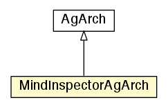

jason.architecture
Class MindInspectorAgArch

java.lang.Object
 jason.architecture.AgArch
jason.architecture.MindInspectorAgArch
jason.architecture.AgArch
jason.architecture.MindInspectorAgArch
- All Implemented Interfaces:
- AgArchInfraTier, java.lang.Comparable<AgArch>
public class MindInspectorAgArch
- extends AgArch
ArArch that displays the mind state of the agent
|
Method Summary |
void |
init()
|
void |
reasoningCycleStarting()
A call-back method called by TS
when a new reasoning cycle is starting |
protected void |
setupMindInspector(java.lang.String configuration)
process the mindinspector parameter used in the agent option in .mas2j project. |
void |
stop()
A call-back method called by the infrastructure tier
when the agent is about to be killed. |
protected void |
updateMindInspector()
|
| Methods inherited from class jason.architecture.AgArch |
act, broadcast, canSleep, checkMail, compareTo, createCustomArchs, equals, getAgArchClassesChain, getAgName, getArchInfraTier, getCycleNumber, getFirstAgArch, getNextAgArch, getRuntimeServices, getTS, hashCode, incCycleNumber, initAg, insertAgArch, isRunning, perceive, sendMsg, setCycleNumber, setTS, sleep, toString, wake |
| Methods inherited from class java.lang.Object |
clone, finalize, getClass, notify, notifyAll, wait, wait, wait |
hasMindInspectorByCycle
protected boolean hasMindInspectorByCycle
updateInterval
protected int updateInterval
mindInspectorFrame
protected static javax.swing.JFrame mindInspectorFrame
mindInspectorTab
protected static javax.swing.JTabbedPane mindInspectorTab
mindInspectorPanel
protected javax.swing.JTextPane mindInspectorPanel
mindInspectorHistorySlider
protected javax.swing.JSlider mindInspectorHistorySlider
mindInspectorFreeze
protected javax.swing.JCheckBox mindInspectorFreeze
mindInspectorHistory
protected java.util.List<java.lang.String> mindInspectorHistory
mindInspectorTransformer
protected asl2xml mindInspectorTransformer
mindInspectorDirectory
protected java.lang.String mindInspectorDirectory
MindInspectorAgArch
public MindInspectorAgArch()
init
public void init()
- Overrides:
init in class AgArch
stop
public void stop()
- A call-back method called by the infrastructure tier
when the agent is about to be killed.
- Overrides:
stop in class AgArch
reasoningCycleStarting
public void reasoningCycleStarting()
- Description copied from class:
AgArch
- A call-back method called by TS
when a new reasoning cycle is starting
- Overrides:
reasoningCycleStarting in class AgArch
setupMindInspector
protected void setupMindInspector(java.lang.String configuration)
- process the mindinspector parameter used in the agent option in .mas2j project.
E.g. agents bob x.asl [mindinspector="gui(cycle,html)"];
General syntax of the parameter:
[gui|file] ( [ cycle|number ] , [xml,html] [, history | directory] )
updateMindInspector
protected void updateMindInspector()